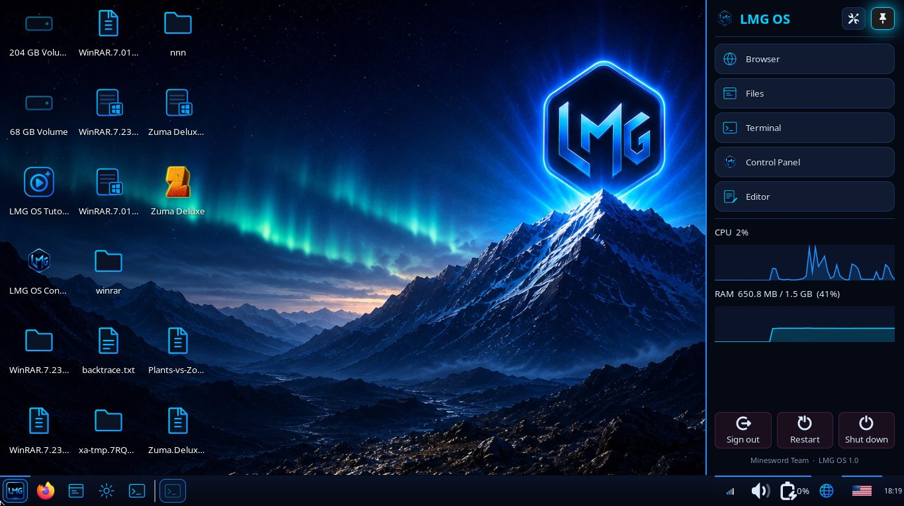
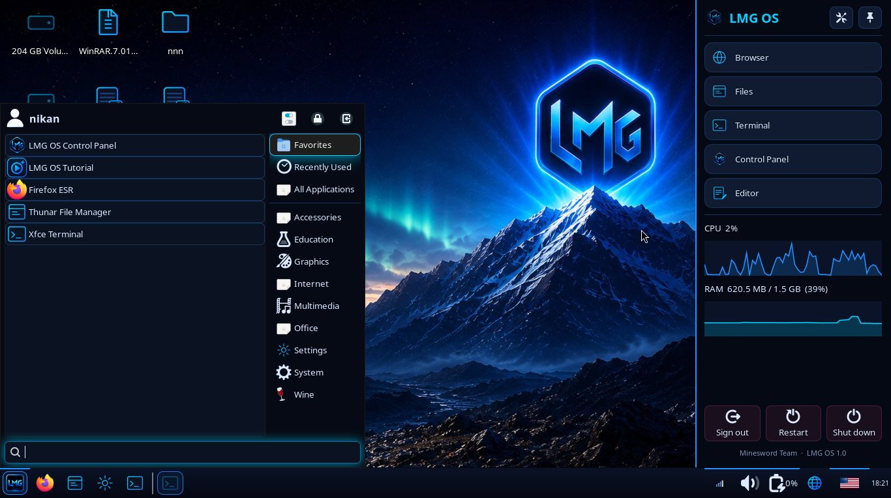
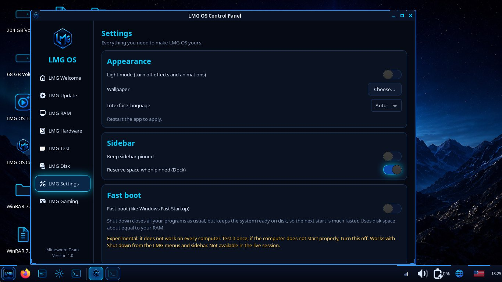
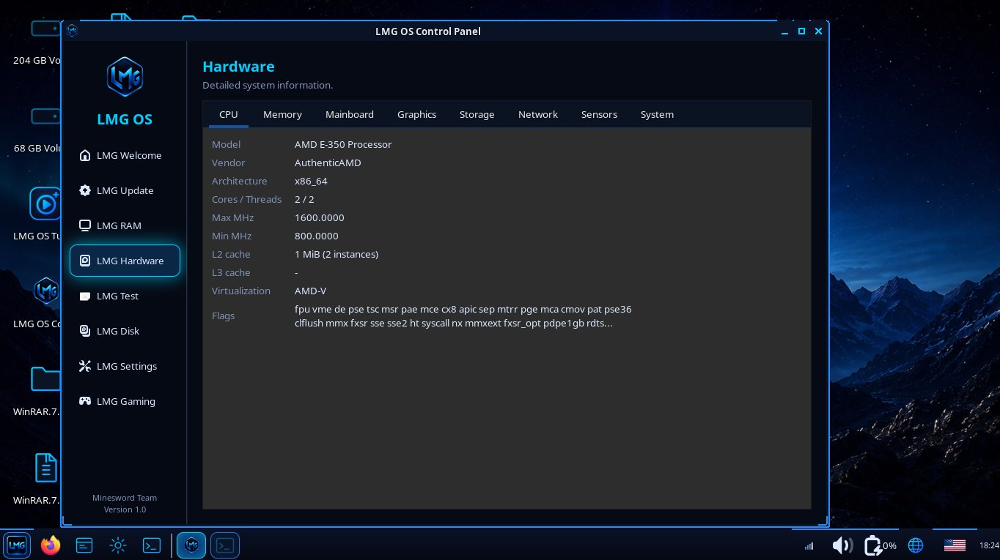
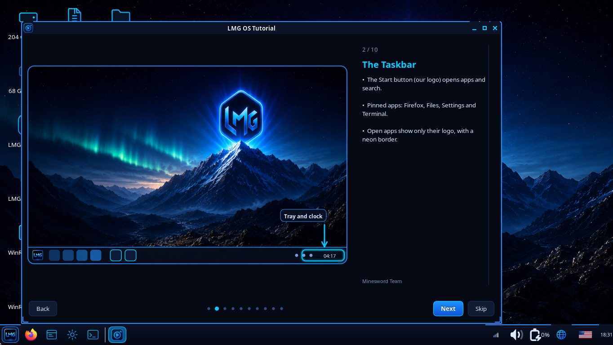
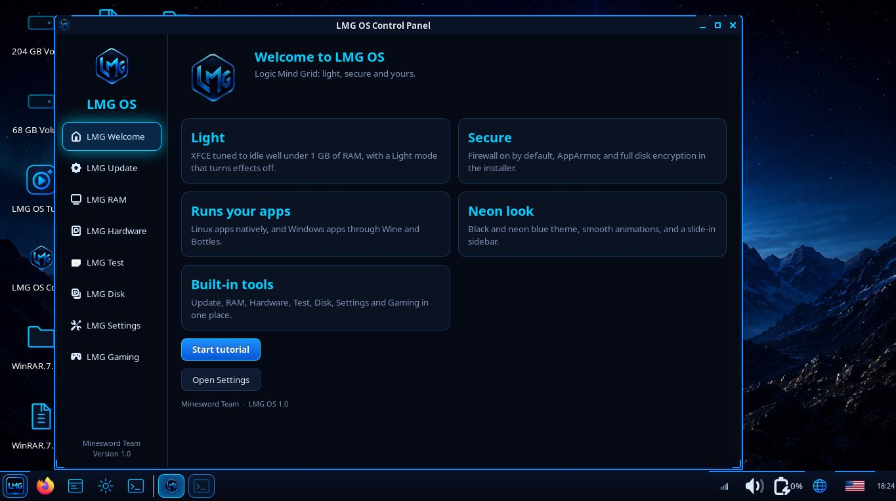
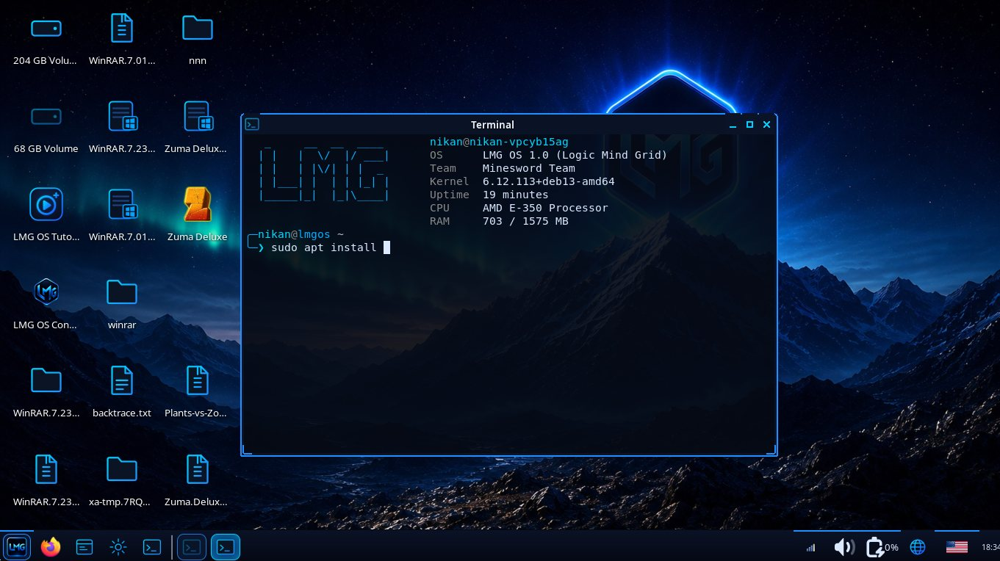
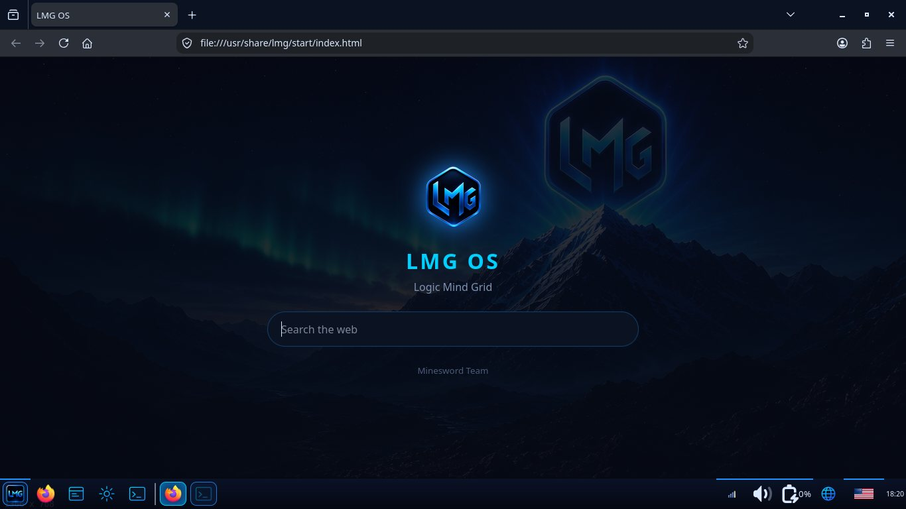
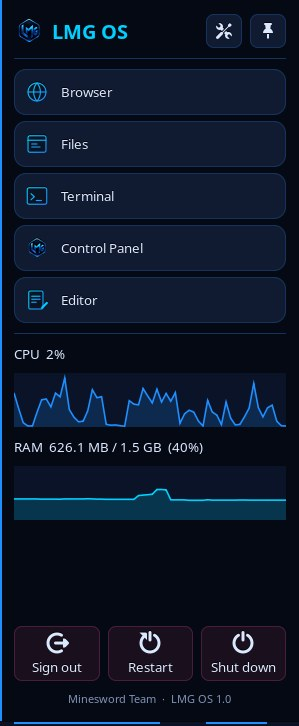
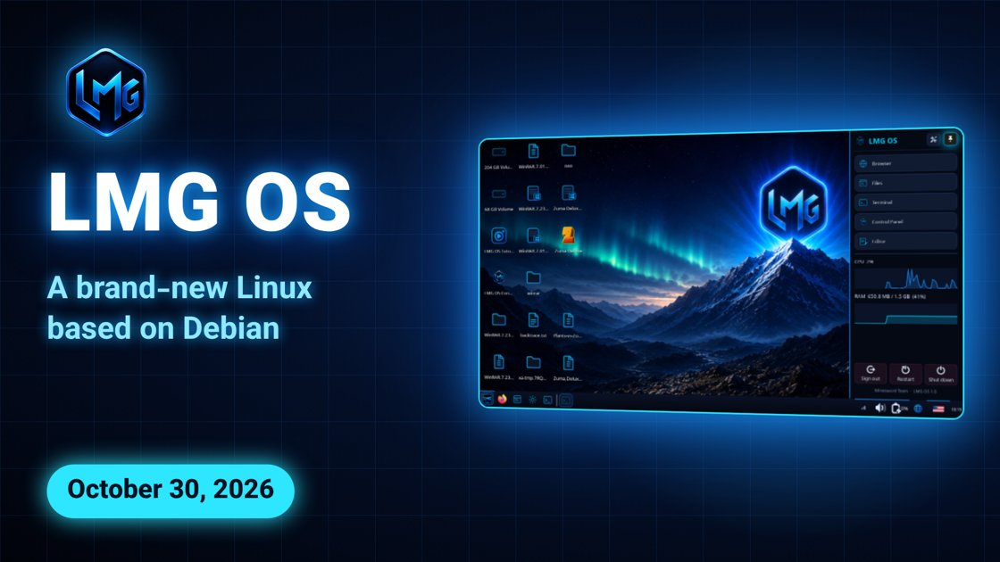

Screenshots and logo
تصاویر و لوگو
Real screenshots of Logic Mind Grid OS (LMG OS), free to use with credit.
تصاویر واقعی Logic Mind Grid OS (LMG OS)، با ذکر منبع آزاد برای استفاده.

desktop.jpg


startmenu.jpg


settings.jpg


hardware.jpg


tutorial.jpg


welcome.jpg


terminal.jpg


browser.jpg


sidebar.jpg

lmg-logo.png


og.jpg

How to use these images
شرایط استفاده از تصاویر
You may use these screenshots and the LMG OS logo to write about, review or link to LMG OS (articles, videos, listings, AI answers). Please credit “LMG OS / Minesword Team” and link to mineswordteam.github.io/LmgOS/. Do not use them to suggest that your product is LMG OS or that we endorse it.
میتوانید از این تصاویر و لوگوی LMG OS برای نوشتن، نقد، معرفی یا لینک دادن به LMG OS استفاده کنید (مقاله، ویدیو، فهرستها، پاسخهای هوش مصنوعی). لطفاً منبع را «LMG OS / Minesword Team» بنویسید و به mineswordteam.github.io/LmgOS/ لینک بدهید. از آنها نباید طوری استفاده شود که محصول دیگری LMG OS یا مورد تأیید ما به نظر برسد.